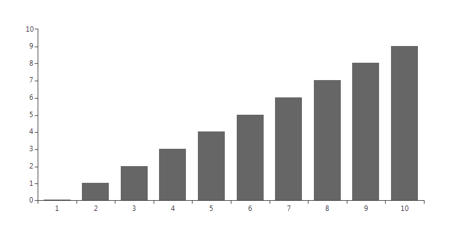

Scroll and Zoom
RadChartView provides zoom and scroll interactivity with the
ChartPanZoomController class.
It is very simple to use and allows users to zoom in the chart plot
area when are there is a dense area of data points that can not be seen
clearly at the normal chart scale. The scroll functionality allows moving
the visible area of the chart. In order to utilize this behavior users
simply have to add it to the chart's Controllers
collection and specify
the zoom mode. For example:
__[C#] __
ChartPanZoomController panZoomController = new ChartPanZoomController();
panZoomController.PanZoomMode = ChartPanZoomMode.Horizontal;
radChartView1.Controllers.Add(panZoomController);
__[VB.NET] __
Dim panZoomController As New ChartPanZoomController()
panZoomController.PanZoomMode = ChartPanZoomMode.Horizontal
RadChartView1.Controllers.Add(panZoomController)
The ChartPanAndZoomController will be added automatically if the ShowPanZoom property of
RadChartView control is set to true. In this case the PanZoomMode is Horizontal (by default):
__[C#] __
radChartView1.ShowPanZoom = true;
__[VB.NET] __
RadChartView1.ShowPanZoom = True
The PanZoomMode property allow developers to restrict zooming.
Setting either of these properties to the Both value removes any
restrictions and the chart can be zoomed in both the horizontal
and vertical axes. The last two values are Horizontal and Vertical
which restrict the behavior horizontally and vertically respectively.
You can now get/set the zoom and pan values of the RadChartView using the
Zoom and Pan methods. Note that the offset should be provided
in negative absolute values e.g Pan(-300,0) will offset the chart horizontally at 300px.
You may use it to simultaneously set zoom for the both axes by separating the values with comma.
For example a Zoom(3 , 1) setting specifies that the data will be
zoomed 3 times according to the XAxis and won't be zoomed by YAxis.
Initial chart:
Zooming:
__[C#] __
radChartView1.Zoom(3, 1);
__[VB.NET] __
RadChartView1.Zoom(3, 1)

Panning with 300 pixels:
__[C#] __
radChartView1.Pan(-300, 0);
__[VB.NET] __
RadChartView1.Pan(-300, 0)

The zoom factor can be controlled using__Ctrl+MouseWheel__ for zoom in and
zoom out functionality. Left Button MouseDown+Move for pan/scroll functionality.